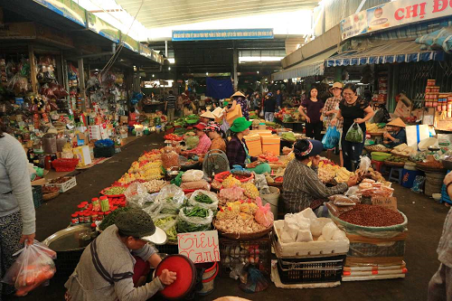

The Golden Bridge is a large tourist attraction in the Ba Na Hills. The Golden Bridge is an extension of an amusement park as well as a French Village, and a Japanese Pagoda. The giant stone hands are meant
to represent the hands of the God of The Mountain.
My Son
My Son is a the location of ancient Hindu temples. Believed to be from the 4th and 15th centuries. A large number of the temples were destroyed during the Vietnam War. My Son is also considered to be the longest inhabited archeological site in Indochina.
The Con Market

The Con Market located within the city of Da Nang is one of the most popular markets in Da Nang. The market offers wholesale goods, produce, clothing, and handcrafted souvenirs. The Con Market is also the largest and most busy within the city thanks to it's highly discounted prices on wholesale goods.